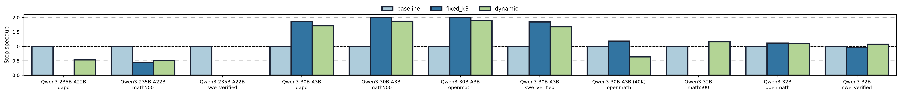
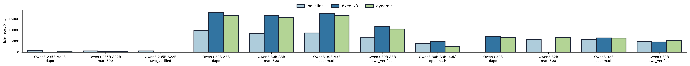
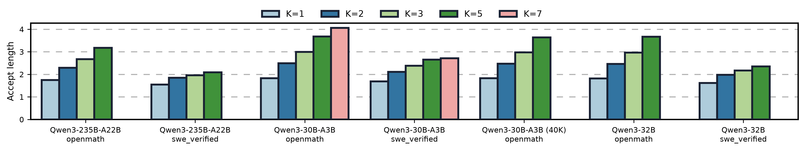

Qwen3-30B-A3B / Qwen3-32B / Qwen3-235B-A22B with RedHatAI EAGLE3
Thinking speculators on Lyris GB200 (vLLM 0.24.0, temperature 1.0, top_p 1.0,
seed 42). Rollout shapes mirror one vLLM DP-worker shard of the NeMo-RL GB200
SyncRL performance recipes (*4g.yaml): N prompts × 32
generations per step with barrier semantics. DynamicSD =
speculative_config.num_speculative_tokens_per_batch_size, the
batch-size→K schedule derived from the Phase-1 grid below.
Per-engine sync rollout (N×32 generations, barrier per step). Charts and table are per model × benchmark; tokens/s/GPU normalizes TP differences (TP1/2/4).
| Model | Bench | Variant | Mean step wall (s) | Mean gen tok/s | Tokens/s/GPU | Speedup vs baseline |
|---|---|---|---|---|---|---|
| Qwen3-235B-A22B | dapo | baseline | 157.9 | 3079.1 | 769.8 | 1.000x |
| Qwen3-235B-A22B | dapo | dynamic | 296.8 | 1871.0 | 467.7 | 0.532x |
| Qwen3-235B-A22B | math500 | baseline | 118.3 | 2297.7 | 574.4 | 1.000x |
| Qwen3-235B-A22B | math500 | dynamic | 232.9 | 1231.5 | 307.9 | 0.508x |
| Qwen3-235B-A22B | math500 | fixed_k3 | 271.8 | 1055.0 | 263.8 | 0.435x |
| Qwen3-235B-A22B | swe_verified | baseline | 142.5 | 2226.4 | 556.6 | 1.000x |
| Qwen3-30B-A3B | dapo | baseline | 54.3 | 9657.1 | 9657.1 | 1.000x |
| Qwen3-30B-A3B | dapo | dynamic | 31.7 | 16550.1 | 16550.1 | 1.713x |
| Qwen3-30B-A3B | dapo | fixed_k3 | 29.1 | 18017.4 | 18017.4 | 1.865x |
| Qwen3-30B-A3B | math500 | baseline | 48.2 | 8299.5 | 8299.5 | 1.000x |
| Qwen3-30B-A3B | math500 | dynamic | 25.7 | 15653.6 | 15653.6 | 1.872x |
| Qwen3-30B-A3B | math500 | fixed_k3 | 24.1 | 16589.7 | 16589.7 | 1.996x |
| Qwen3-30B-A3B | openmath | baseline | 50.9 | 8625.0 | 8625.0 | 1.000x |
| Qwen3-30B-A3B | openmath | dynamic | 26.8 | 16456.0 | 16456.0 | 1.897x |
| Qwen3-30B-A3B | openmath | fixed_k3 | 25.4 | 17323.9 | 17323.9 | 2.004x |
| Qwen3-30B-A3B | swe_verified | baseline | 42.5 | 6441.6 | 6441.6 | 1.000x |
| Qwen3-30B-A3B | swe_verified | dynamic | 25.3 | 10442.9 | 10442.9 | 1.681x |
| Qwen3-30B-A3B | swe_verified | fixed_k3 | 23.0 | 11490.3 | 11490.3 | 1.849x |
| Qwen3-30B-A3B (40K) | openmath | baseline | 155.9 | 7746.6 | 3873.3 | 1.000x |
| Qwen3-30B-A3B (40K) | openmath | dynamic | 245.8 | 5147.7 | 2573.9 | 0.634x |
| Qwen3-30B-A3B (40K) | openmath | fixed_k3 | 131.5 | 9679.2 | 4839.6 | 1.186x |
| Qwen3-32B | dapo | dynamic | 80.6 | 12986.2 | 6493.1 | - |
| Qwen3-32B | dapo | fixed_k3 | 73.5 | 14225.2 | 7112.6 | - |
| Qwen3-32B | math500 | baseline | 67.8 | 11619.5 | 5809.8 | 1.000x |
| Qwen3-32B | math500 | dynamic | 58.5 | 13495.3 | 6747.7 | 1.160x |
| Qwen3-32B | openmath | baseline | 69.2 | 11482.3 | 5741.1 | 1.000x |
| Qwen3-32B | openmath | dynamic | 62.7 | 12720.0 | 6360.0 | 1.103x |
| Qwen3-32B | openmath | fixed_k3 | 62.0 | 12813.3 | 6406.7 | 1.116x |
| Qwen3-32B | swe_verified | baseline | 64.5 | 9736.4 | 4868.2 | 1.000x |
| Qwen3-32B | swe_verified | dynamic | 60.0 | 10391.8 | 5195.9 | 1.076x |
| Qwen3-32B | swe_verified | fixed_k3 | 67.4 | 9123.7 | 4561.8 | 0.958x |
Capture-cliff lesson: the first dynamic tables carried K=5 into BS 86-127 where bs×(K+1) > 512 exceeds the cudagraph capture budget, forcing eager-mode decode (openmath dynamic 37.4s vs fixed-K3 25.4s). Tables are now derived with an analytic bs×(K+1) ≤ capture-budget cap; capture-aware dynamic recovers to within ~5% of fixed-K3 on 30B-A3B (1.87-1.90x vs 2.00x). In this 4K-generation regime most wall time sits at high concurrency where K=3 is already optimal, so fixed-K3 keeps a small edge - the settings where the derived schedule turns speculation off at high BS (Qwen3-32B SWE, Qwen3-235B) and the 32K long-tail preset are where DynamicSD is expected to pull ahead.
Deeper K is not the memory-bound answer here: K=7 raises acceptance length to 4.11 (vs 3.73 at K=5) but per-position acceptance decay means tokens/s never beats K=5, and at BS=1 plain K=3 is fastest (607 vs 590/556 tok/s). The derived schedules therefore never select K>5.



| Setting | Derived batch-size → K schedule (argmax measured tok/s) |
|---|---|
| qwen3_235b_openmath | BS 1-1 → K=5, BS 2-31 → K=3, BS 32-63 → K=1, BS 64-64 → K=0 |
| qwen3_235b_swe_verified | BS 1-3 → K=2, BS 4-7 → K=1, BS 8-31 → K=3, BS 32-63 → K=1, BS 64-64 → K=0 |
| qwen3_30ba3b_40k_openmath | BS 1-3 → K=3, BS 4-7 → K=5, BS 8-15 → K=3, BS 16-31 → K=5, BS 32-127 → K=3, BS 128-128 → K=2 |
| qwen3_30ba3b_openmath | BS 1-1 → K=3, BS 2-85 → K=5, BS 86-102 → K=4, BS 103-128 → K=3 |
| qwen3_30ba3b_swe_verified | BS 1-15 → K=3, BS 16-63 → K=5, BS 64-128 → K=3 |
| qwen3_32b_openmath | BS 1-31 → K=5, BS 32-127 → K=3, BS 128-256 → K=1 |
| qwen3_32b_swe_verified | BS 1-7 → K=5, BS 8-31 → K=3, BS 32-63 → K=2, BS 64-255 → K=1, BS 256-256 → K=0 |
vLLM 0.24's draft_sample_method="probabilistic"
(stochastic drafter sampling with cached draft logits for exact rejection
sampling) showed no acceptance-length gain over greedy drafting on
Qwen3-30B-A3B/openmath (AL 2.99 vs 3.01 at K=3) and 3-10% lower tok/s from the
logits-caching overhead, so the main matrix uses greedy drafting.
Profiling grids use fixed-length generation (ignore_eos); each K is a separate engine, K=0 disables speculation. The K=5 collapse at BS=128 is the cudagraph-capture cliff (128×6 = 768 tokens/step > default 512 max capture size) - exactly the regime cost DynamicSD avoids. Drain curves show sequences still in flight within a rollout step; the long low-concurrency tail is where DynamicSD raises K beyond the fixed-K compromise.


drain_curves.csv profile_grid.csv rollout_steps.csv rollout_summary.csv
Source: experiments/dynamic_sd_sync_rollout/
(harness, tables, report data). Jobs run in
vllm-benchmark/dynamic_sd_runs/ on Lyris.